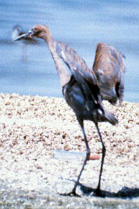
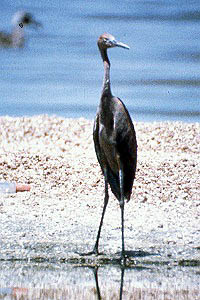

| These photographs accompany records that have been recently submitted to the committee. This record
has been ACCEPTED.  Reddish Egret Egretta rufescens 15 Aug 81, Salton City, IMP 1997-102 © 1981 Bob Sha  Reddish Egret Egretta rufescens 15 Aug 81, Salton City, IMP 1997-102 © 1981 Bob Sha |